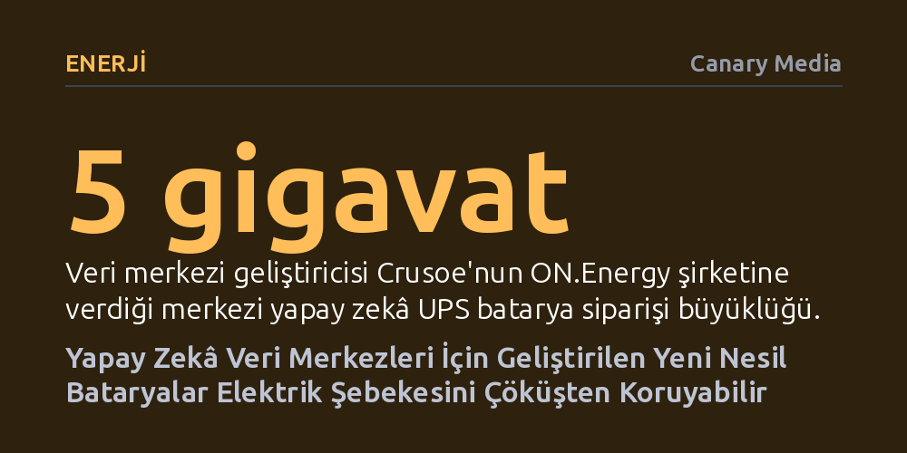

ENERJI · Canary Media · 2026-10-16
Yapay zekâ veri merkezleri ile elektrik şebekesi arasına yerleştirilen merkezi lityum iyon bataryalar, ani yük kopmalarını engelleyerek elektrik kesintilerinin ve şebeke çökmelerinin önüne geçiyor. Bu sistemler, geleneksel dizel jeneratörlerin ve gaz türbinlerinin yerini alarak şebekeyi istikrara kavuşturuyor.
Yapay zekânın aşırı enerji tüketiminin elektrik şebekesini çökerteceği endişesine karşı, yeni nesil bataryaların veri merkezlerini bir tehdit olmaktan çıkarıp dengeleyici bir unsura dönüştürebileceğini gösterir.

Yapay zekâ patlamasıyla birlikte kurulan devasa veri merkezleri, daha önce görülmemiş boyutlarda elektrik talep ediyor. Teknoloji devleri bu ihtiyacı karşılamak için gigavat ölçeğinde doğal gaz türbinleri ve dizel jeneratörler kurmaya yönelirken, bu durum hem karbon emisyonlarını artırıyor hem de bölgesel enerji altyapısına ağır bir maliyet yüklüyor.
Ancak şebeke operatörleri için asıl tehdit yalnızca yüksek tüketim değil; bu tesislerin elektrik kalitesindeki en ufak dalgalanmada hassas donanımlarını korumak amacıyla aniden şebekeden ayrılması. Örneğin Virginia'da tek bir olayda yaklaşık 4 gigavatlık veri merkezi yükünün bir anda devreden çıkması gibi vakalar, arz-talep dengesini altüst ederek bölgesel elektrik çöküşü riskini doğuruyor.
Veri merkezleri onlarca yıldır kesintisiz güç kaynağı (UPS) olarak adlandırılan ve çoğunlukla eski nesil kurşun-asit kimyasına dayanan bataryalara bel bağlıyor. Ne var ki bu geleneksel sistemler yalnızca ana elektrik tamamen kesildiğinde jeneratörler devreye girene kadar köprü işlevi görüyor ve geri kalan zamanlarda atıl bekliyor.
ON.Energy gibi girişimlerin geliştirdiği yeni merkezi yapay zekâ UPS sistemleri ise şebeke ile veri merkezi arasına yerleştirilen lityum iyon bataryalardan oluşuyor. İki yönlü bir amortisör gibi çalışan bu bataryalar, hem şebekeden gelebilecek ani gerilim dalgalanmalarını tesis için yumuşatıyor hem de tesisin şebekeden aniden kopup enerji sisteminde devasa boşluklar yaratmasını engelliyor.
Bu teknolojinin hayata geçebilmesi için en kritik aşama, merkezi lityum iyon mimarisinin aşırı yükler altında gerçekten vadettiği kararlılığı sağlayabildiğinin kanıtlanmasıydı. Kayalık Dağlar Ulusal Laboratuvarı bünyesindeki şebeke simülatöründe yapılan bağımsız donanım testleri, sistemin çoklu megavat ölçeğinde başarıyla çalıştığını doğruladı.
Laboratuvar onayının ardından veri merkezi geliştiricisi Crusoe, 5 gigavatlık dev bir siparişle teknolojiyi ticari kampüslerinde uygulamaya aldı. Yeni inşa edilen tesislerin mimarisi, binaların içine tıkıştırılan geleneksel UPS odaları yerine tesisin hemen yanına kurulan merkezi batarya parklarına göre şekillendiriliyor.
Kuzey Amerika Elektrik Güvenilirlik Kurumu (NERC) ve Teksas regülatörleri, veri merkezlerinin rüzgâr ve güneş santralleri gibi şebeke sarsıntılarına karşı hattan düşmeden dayanmasını zorunlu kılan yeni kurallar getiriyor. Bu düzenlemeler batarya yatırımlarını isteğe bağlı bir maliyetten çıkarıp operasyonel bir zorunluluk haline getiriyor.
İlk yatırım maliyetini kesintisiz güç ve şebeke koruması sağlayarak çıkaran bu bataryalar, veri merkezlerinin tepe tüketim saatlerini tıraşlamasına ve ucuz yenilenebilir enerji fazlasını depolamasına da zemin hazırlıyor. Böylece veri merkezleri kamuya devasa altyapı faturaları yükleyen bir tüketici olmaktan çıkıp elektrik şebekesini destekleyen esnek bir güce dönüşüyor.